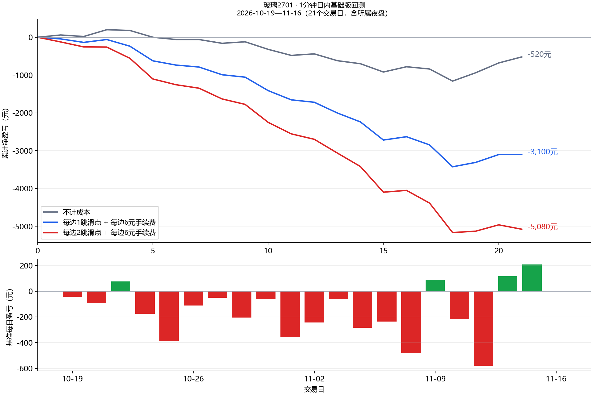

该月基础版：50笔完整开平，净亏3,100元；胜率28%。不计交易成本时亏520元，加入手续费和滑点后亏损进一步扩大。
申请窗口：2026-10-17至2026-11-16；实际21个交易日：10月19日至11月16日，7,245根真实1分钟K线。每个交易日345根，无缺口，且逐日OHLCV汇总与同源日线全部一致。10月19日交易日包含10月16日21:00起的夜盘，日盘14:59开盘清仓，均线与状态按交易日重置。

| 指标 | 不计成本 | 基准：每边1跳 | 压力：每边2跳 |
|---|---|---|---|
| 完整开平笔数 | 50 | 50 | 50 |
| 成本前盈亏（元） | -520 | -500 | -480 |
| 手续费（元） | 0 | 600 | 600 |
| 滑点成本（元） | 0 | 2,000 | 4,000 |
| 净盈亏（元） | -520 | -3,100 | -5,080 |
| 胜率 | 30.0% | 28.0% | 24.0% |
| 盈利因子 | 0.82 | 0.34 | 0.17 |
| 已实现最大回撤（元） | 1,480 | 3,580 | 5,360 |
| 分钟收盘盯市最大回撤（元） | 1,580 | 3,740 | 5,520 |
基准每边每手6元手续费，一组开平12元；每边1跳滑点，一组开平40元滑点成本。50笔合计手续费600元、滑点2,000元。基准成本前盈亏-500元，净盈亏-3,100元。不计成本场景是单独重放，因止损锚定实际成交价，止损成交与净值不等同于直接给基准加回成本。
天勤采集时的commission字段为2.0元，但它不能验证整月各日的平今手续费或券商附加费。因此基准6元是明确假设。保持基准成交与滑点不变，每边费用2/4/6元对应净亏2,700/2,900/3,100元。未给初始资金，不报告收益率、资金占用率或保证金收益率。
基准多头25笔，净亏1,200元；空头25笔，净亏1,900元。5天盈利、16天亏损；最好一天11月13日+208元，最差一天11月11日-580元。单笔最大盈利268元，最大亏损232元，平均净亏62元。34笔因反向均线突破退出，15笔日终清仓，1笔固定止损。
| 交易日 | 完整开平笔数 | 净盈亏（元） |
|---|---|---|
| 2026-10-19 | 2 | -44 |
| 2026-10-20 | 1 | -92 |
| 2026-10-21 | 2 | 76 |
| 2026-10-22 | 3 | -176 |
| 2026-10-23 | 4 | -388 |
| 2026-10-26 | 1 | -112 |
| 2026-10-27 | 1 | -52 |
| 2026-10-28 | 2 | -204 |
| 2026-10-29 | 2 | -64 |
| 2026-10-30 | 3 | -356 |
| 2026-11-02 | 2 | -244 |
| 2026-11-03 | 2 | -64 |
| 2026-11-04 | 2 | -284 |
| 2026-11-05 | 3 | -236 |
| 2026-11-06 | 5 | -480 |
| 2026-11-09 | 1 | 88 |
| 2026-11-10 | 3 | -216 |
| 2026-11-11 | 5 | -580 |
| 2026-11-12 | 2 | 116 |
| 2026-11-13 | 1 | 208 |
| 2026-11-16 | 3 | 4 |
这次只测一个月、一个合约。基础规则在该窗口为负，不能直接推断长期收益。尚未量化收敛点和趋势过滤。1分钟OHLC不能恢复分钟内价格与动态均线的先后顺序，回踩不破使用该根收盘时已知的均线作近似判断；固定滑点不能恢复排队、盘口深度或涨跌停成交约束。回撤按分钟收盘盯市统计，盘中瞬时回撤可能更大。精确分时均价、券商历史手续费、逐笔撮合均未复原。
合约规格来源：郑商所平板玻璃期货业务细则；行情字段与窗口：天勤SDK官方文档。测试只读取行情，无实盘委托。